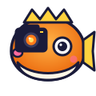
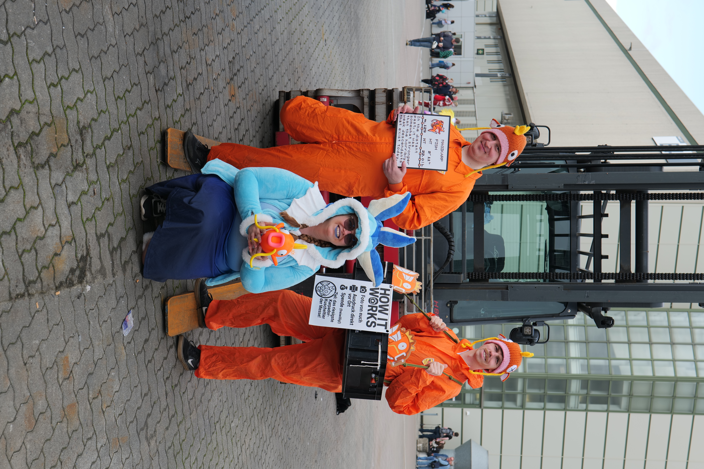
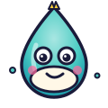
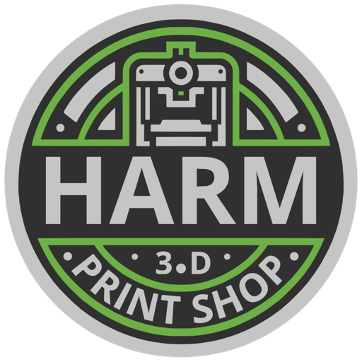

Karpador · „Der Fotograf"
Kamera, Licht, Pose-Coach
Im orangen Overall mit Magikarp-Mütze. Bringt euer Cosplay ins beste Licht und drückt im richtigen Moment ab.
Drei Anime-Fans, ein Drucker, eine ganze Menge Glitzer-Folie. Was als spontane Cosplay-Idee anfing, läuft seit Polaris 2025 — und geht jetzt erst richtig los.

Es war eine dieser typischen Convention-Pausen: „Hey, wir sollten Karpador machen — und Fotos verkaufen!" Eine halb-ironische Idee zwischen zwei Bubble Teas.
Ein paar Wochen später hatten wir orange Overalls, gehäkelte Magikarp-Mützen, einen umgebauten Bauchladen aus einer Bierkiste, einen mobilen Sublimationsdrucker, ein 3D-gedrucktes Logo — und keinen blassen Schimmer, ob das jemand mitmachen würde.
Hat es. Auf der Polaris 2025 sind wir das erste Mal als Karpador-Crew losgezogen — 100+ Fotos gedruckt, müde Füße, leere Druckerpatronen. Jetzt geht's auf der DoKomi 2026 weiter.
Was viele am Bauchladen nicht direkt sehen: das ganze Setup — Karpador-Schilder, Logo-Sticker, das How-it-works-Schild — kommt aus unserer eigenen 3D-Druck-Werkstatt, dem 3D Print Shop Harm in Eutin. Karpador Fotos ist sozusagen unsere bunteste Visitenkarte.

Kamera, Licht, Pose-Coach
Im orangen Overall mit Magikarp-Mütze. Bringt euer Cosplay ins beste Licht und drückt im richtigen Moment ab.
Bauchladen, Druck, Smalltalk
Auch im orangen Overall. Bändigt den mobilen Drucker, sortiert die Spendenkasse, kennt alle Hallenpläne auswendig.

Blau, charmant, unverzichtbar
Im blauen Cosplay — das dritte Crewmitglied, das die Karpador-Brüder zusammenhält. Sorgt für gute Stimmung in der Schlange.
Spenden sind freiwillig. Convention-Geld ist knapp, Bubble Tea teuer — wir verstehen das.
Kein „später runterladen". Ihr habt etwas in der Hand, das ihr mit nach Hause nehmt.
Eure Outfits sind die Stars. Wir sind nur die orangen Helferlein.
Bauchladen-Schmuck, Logo-Stickers, Schilder, Druckerhalterungen — alles, was am Karpador-Auftritt aus Kunststoff ist, kommt aus unseren eigenen FDM- und Resin-Druckern in Eutin. Wir drucken auch für dich: Cosplay-Props, Custom-Modelle, Würfelboxen, CAD-Designs auf Bestellung.

„Ihre innovative Lösung für professionellen 3D-Druck."
Hier geht's zu unseren nächsten Stops — oder bucht uns für eure private Con.